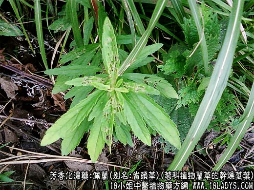
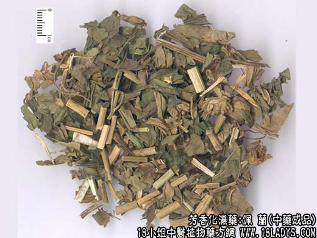
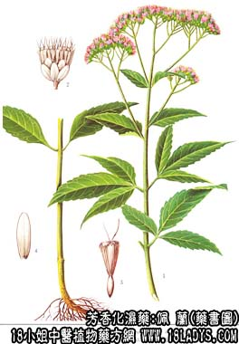

佩兰为较长用中药，始载《神农本草经》。原名“兰草”。
别名：佩兰叶，省头草。
来源：为菊科植物兰草的干燥茎叶。野生或栽培。
植物形态：为多年生草本。根茎横走，茎高一米左右，圆柱形。叶对生通常三裂，茎上部叶片往往单一较小，叶缘具不整齐的锯齿。表面绿色，背后淡绿色，无腺点，沿叶脉疏被柔毛。头状花序紧密排列呈聚伞形，总苞长6～8毫米，总苞片10枚左右，花冠下部呈管状，上部稍宽顶端五裂，白色，瘦果。
产地：主产于江苏、河北、浙江、广东、广西、山东等省。
形状鉴别：茎圆柱形或被压为扁方圆形，全长约一米，基部直径约4～8毫米，中上端渐细。表面褐色或黄绿色，幼茎紫色，节段明显。叶对生、干后多皱缩破碎，灰绿色。茎质脆易折断，断面类白色，中央有髓，有时中空。多不具花。气芳香，味微苦。以叶多，色绿，未开花，不带根，香味浓者为佳。
主要成分：含挥发油，其中主成分为伞花烃、麝香草甲醚橙花醇乙酯。
药理作用：开胃化湿。临床观察其作用为健胃、利尿、解热。又实验证明其所含的对伞花烃和醋酸橙花醇酯能直接抑制流感病毒。
炮制：切咀生用。
性味：辛平。
归经：入脾，胃经。
功能：发表解暑，化湿开胃。
主治：夏伤暑湿，头胀胸闷，寒热，身重，口中甜腻或多涎臭，胃呆不饥。
临床应用：为治疗暑湿用药；
1、用于治疗夏季外感，有发热、头痛、全身骨痛、两日刺痛、胸闷恶心、大便不畅等症状，常配葛根、黄芩、厚朴等，方如佩兰芩朴汤。如属胃肠型流感，配藿香效果更好。
2、用于治疗因热性病或吃用肥腻过多后而致的消化不良，表面有口中粘滞不爽、吐厚浊涎沫、苔白而腻、口甘、嗳气等所谓”脾痹”症状，常配黄连、芦根等。
佩兰和藿香都能去暑湿而治消化不良，但佩兰去口中粘腻和吐涎沫的效力较好，藿香则止呕作用较强。
用量：4.5～9g。
处方举例：佩兰芩朴汤：佩兰9g，条芩6g、厚朴6g，野菊花9g，白术9g，葛根12g，秦艽4.5g，桔梗9g，水煎服。
注：1、广西自治区以本品兰草作泽兰药用。山东省以唇形科“罗勒”作佩兰用（江苏则称为省头草），兰草则称南佩兰。黑龙江部分地区用唇形科植物地瓜儿苗（泽兰）作佩兰用，还有的用菊科旱莲草作佩兰用。情况比较杂乱。